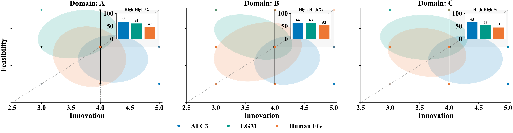
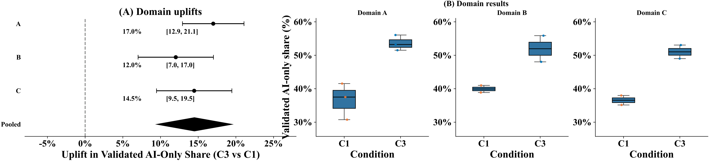
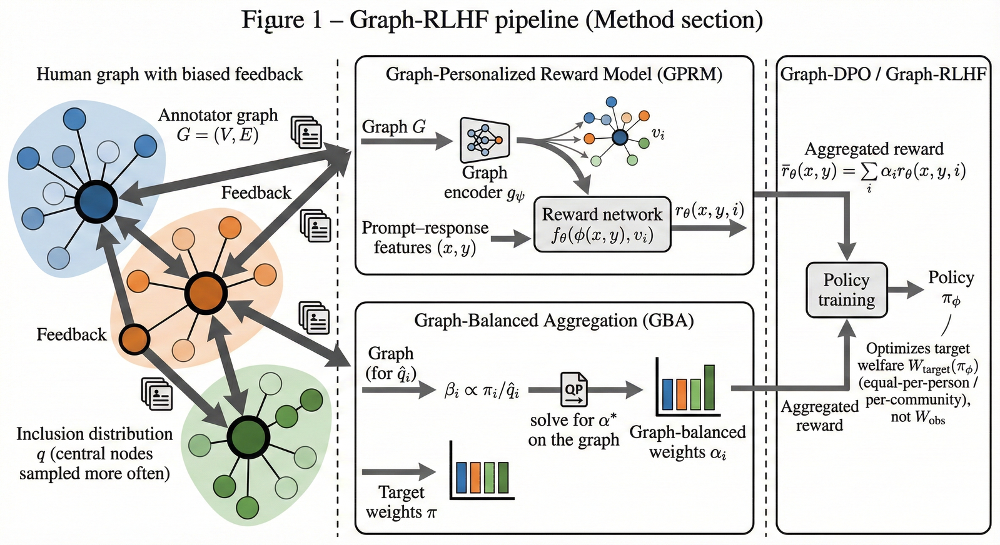
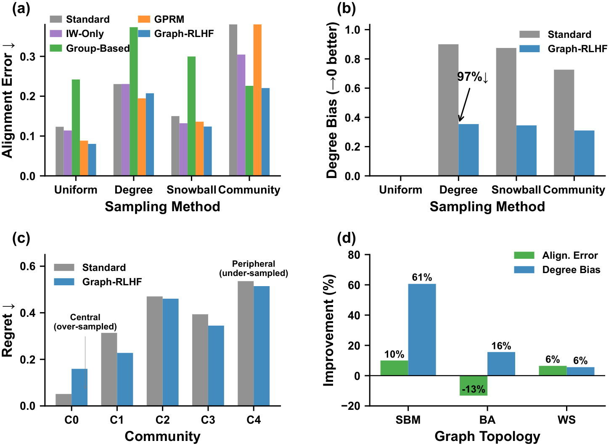

Paper Detail
论文详解 · 方向三
14 May 2026
Direction III
AI4SE
方向三 · 代表性论文


Paper 05 / Direction III
虚拟焦点小组
Multi-LLM Persona Generation for Virtual Focus Groups in Software Engineering
★
Fan, G.
·
FSE 2026
CCF-A
Problem
问题
如何低成本获取软件工程中的
情感需求
?
Method
方法
多 LLM persona + virtual focus groups 框架
Finding
发现
为需求分析提供
可控 · 可复现
的用户模拟工具


Paper 06 / Direction III
人类反馈偏差校正
Graph-Preference Learning: Debiasing Network-Sampled Human Feedback for Welfare Estimation
★
Fan, G.
·
ICML 2026
CCF-A
Problem
问题
网络结构如何造成
群体福利估计偏差
?
Method
方法
图上建模偏好结构 + 可学习的重加权采样器
Finding
发现
Target welfare 估计误差
显著降低
, 可外推到推荐与公平
樊光瑞
· gerryfan0706.github.io
12
/ 17